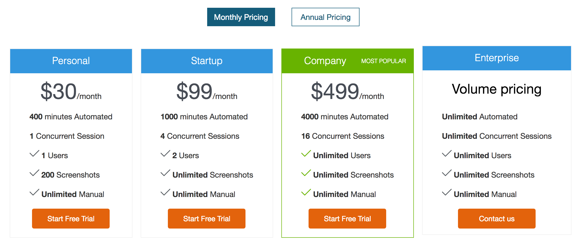

跨瀏覽器測試 (Cross Browser Testing)
ANDROID = {'platform': 'ANDROID', 'browserName': 'android', 'version': ''}
CHROME = {'platform': 'ANY', 'browserName': 'chrome', 'version': ''}
EDGE = {'platform': 'WINDOWS', 'browserName': 'MicrosoftEdge', 'version': ''}
FIREFOX = {'acceptInsecureCerts': True, 'browserName': 'firefox', 'marionette': True}
HTMLUNIT = {'platform': 'ANY', 'browserName': 'htmlunit', 'version': ''}
HTMLUNITWITHJS = {'platform': 'ANY', 'browserName': 'htmlunit', 'version': 'firefox', 'javascriptEnabled': True}
INTERNETEXPLORER = {'platform': 'WINDOWS', 'browserName': 'internet explorer', 'version': ''}
IPAD = {'platform': 'MAC', 'browserName': 'iPad', 'version': ''}
IPHONE = {'platform': 'MAC', 'browserName': 'iPhone', 'version': ''}
OPERA = {'platform': 'ANY', 'browserName': 'opera', 'version': ''}
PHANTOMJS = {'platform': 'ANY', 'browserName': 'phantomjs', 'version': '','javascriptEnabled': True}
SAFARI = {'platform': 'MAC', 'browserName': 'safari', 'version': ''}
介紹 PhantomJS
- PhantomJS 無需瀏覽器的支持即可實現對 Web 的支持
- 快速入門：http://phantomjs.org/quick-start.html
- 範例：http://phantomjs.org/examples/
- Install PhantomJS on Windows - YouTube
browserName: 'phantomjs'
// 執行
phantomjs
console.log('Loading a web page');
var page = require('webpage').create();
var url = 'http://phantomjs.org/';
page.open(url, function (status) {
//Page is loaded!
phantom.exit();
});
適用場景
- 作業系統沒有 GUI 環境
- 非常單純的測試
雲端瀏覽器測試
- SauceLabs: https://saucelabs.com/
- BrowserStack: https://www.browserstack.com/
- TestingBot: https://testingbot.com/
介紹 TestingBot
- 功能
- 價格方案
